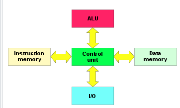

task analysis
eset assembler to eset binary
*.easm -> compiler.py -> *.evm
python2 compiler.py samples/math.easm math.evm
diff math.evm samples/precompiled/math.evmhexdump -C samples/precimpiled/math.evmxxd -b samples/precimpiled/math.evmharvard architecture- there is separated instructions from data
study material:
https://justinmeiners.github.io/lc3-vm/https://github.com/eaglx/VmInstructionsDecoder/blob/main/include/core.hpp